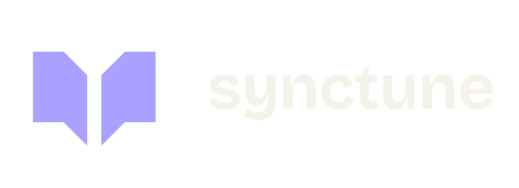

Engineering Interviews
Practice for engineering interviews and system-design conversations, with a free, open-source preparation platform.
Explore the interview project
Synctune / Edu / Learning & careers
Practice the interview. Understand the system. Get a clearer view of your next step. Resources and mentoring for engineers who want to move forward.
Something you can use
Open learning resources sit alongside projects in development. Availability is stated on each card.
Practice for engineering interviews and system-design conversations, with a free, open-source preparation platform.
Explore the interview projectAn opinionated guide to the skills, tools and thinking behind platform engineering.
Explore the roadmapA commercial project for tracking applications, reviewing resumes and preparing for your next role.
Source is not public.
One-to-one with Matteo Bianchi
Mentoring is a focused conversation about your engineering work and career. Start with a concrete goal, then work on the knowledge, practice and decisions that move you towards it.
Matteo works with a small number of mentees at a time. Current availability and the details of working together are on his mentoring profile.
Meet Matteo on MentorCruiseKept for reference
Earlier community and platform-engineering work. Archived means these are not actively maintained projects.
Event resources from the Cloud Native Days project.
Browse the event archiveAn earlier set of platform-engineering principles inspired by the manifesto format.
Read the manifesto archive